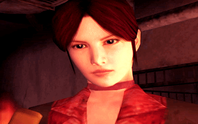
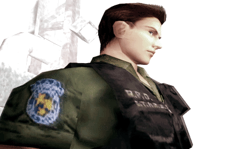
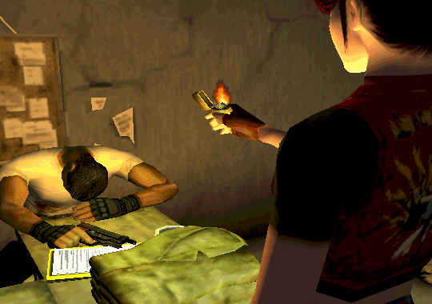
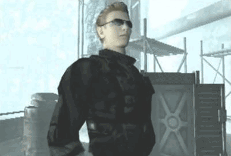
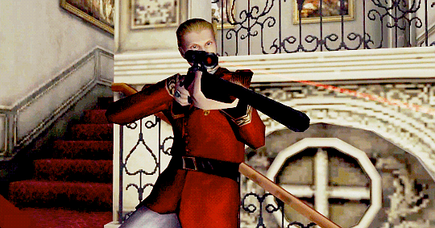
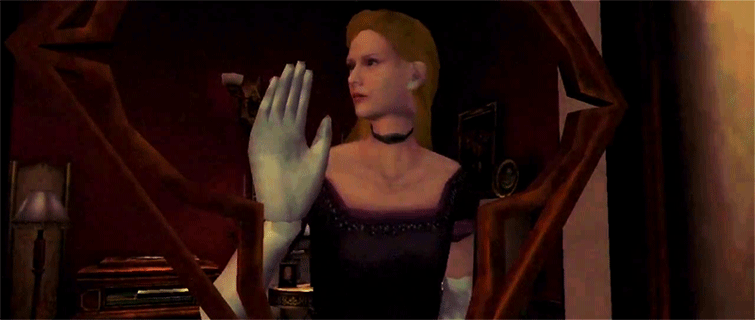

-
Claire Redfield
Description
Three months after the disaster in Raccoon City, Claire Redfield infiltrates one of Umbrella's facilities in France, where she is captured and taken to Rockfort Island. There, she finds herself once again ensnared in a nightmare orchestrated by Albert Wesker and Alfred Ashford, and she will stop at nothing until she finds her brother, Chris Redfield.
-
Steve Burnside

Description
One of the prisoners on Rockfort Island, Steve is only 17 years old and had his family destroyed by the Umbrella Corporation. Like Claire, he escaped amid the chaos following the attack and joins forces with her to survive the nightmare.
-
Chris Redfield
Description
Answering his sister's call, Chris goes to Rockfort Island to rescue her. Chris is a former member of S.T.A.R.S., whose sole objective is to put an end to Umbrella's illegal activities. Little did he know that he would encounter his arch-enemy on this mission.
-
Rodrigo Juan Javal
Description
Responsible for Claire Redfield's imprisonment, he is one of Umbrella's security officers. After the attack and virus outbreak, he frees the girl and, injured, decides to stay behind and await his own death.
-
Albert Wesker
Description
The traitor of S.T.A.R.S., whom everyone believed to be dead, goes to Rockfort Island in search of the T-Veronica virus. Wesker is also behind the attack on the island and the subsequent release of the virus. Unscrupulous and cold, he now possesses power that surpasses the capabilities of any normal human being.
-
Alfred Ashford
Description
A direct descendant of one of Umbrella's founders, Alfred has an insane personality and an immeasurable love for his twin sister, Alexia. He believes that Claire is responsible for the attack on Umbrella's military base on Rockfort Island, a responsibility he has held since the death of his father, Alexander.
-
Alexia Ashford
Description
Alfred's sister possesses extraordinary intelligence. Promoted to researcher at only 10 years old, she led the development of the T-Veronica project, a new virus based on red ants. Her devotion to the project, however, reached extreme levels.
-
Tyrant (T-103)

Description
It is the same Tyrant seen in RE2, but this one is a mass-production model sent to Rockfort Island. In the first encounter, a single hit from it is enough to kill you.
-
Nosferatu

Description
Father of Alexia and Alfred, infected with the T-Veronica virus. He has long-range attacks and releases a poisonous gas that cannot be neutralized with the blue herb.